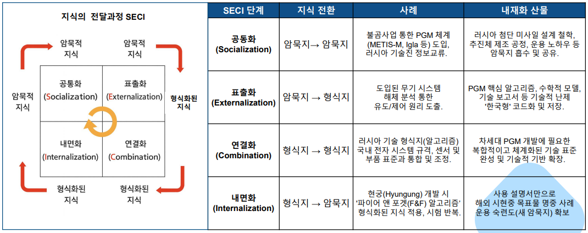
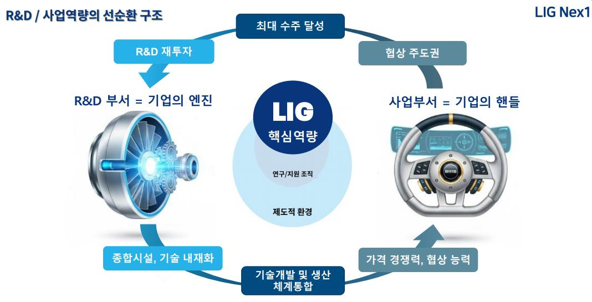
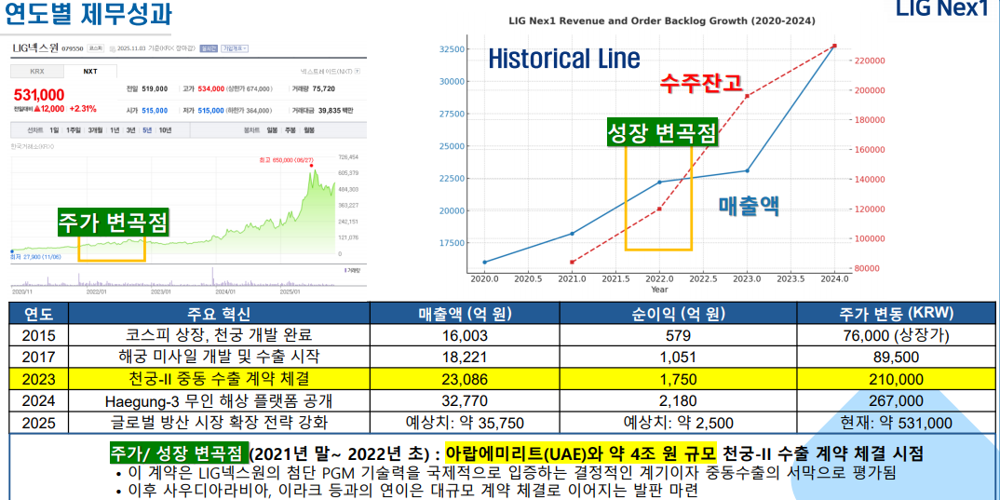
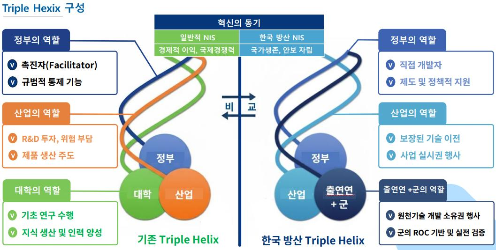

2022년 아랍에미리트(UAE)와의 약 4조 원 규모 천궁-II 수출 계약을 시작으로, LIG넥스원은 중동 3개국에 총액 약 12조 원의 정밀유도무기(PGM) 수출에 성공하며 2024년 기준 20조 1,419억 원이라는 사상 최대 수주 잔고를 기록했다. 본 사례연구는 후발주자였던 LIG넥스원이 어떻게 첨단 PGM 분야에서 글로벌 경쟁력을 확보했는지를 기업·지원조직·제도적 환경의 세 축으로 분석하고, 그 근본 동력을 한국의 독특한 국가 주도형 혁신 체계, 즉 'Statist Triple Helix' 구조에서 찾는다.
- LIG넥스원의 정밀유도무기(PGM) 수출 성공은 한국 방위산업이 후발주자에서 글로벌 핵심 주체로 질적 전환을 이룬 변곡점으로, 그 근본 동력은 기업의 R&D·사업 역량을 넘어선 Statist Triple Helix(국가 주도형 혁신 체계) 구조에서 비롯되었다.
- 이 구조에서 국방과학연구소(ADD)가 지식 생산과 소유권을 독점하고, 기술료 면제 제도가 유럽 경쟁사 대비 20% 이상의 '제도적 가격 우위'를 제공하며, 범정부적 통합 거버넌스가 수출을 완성하는 역할을 수행하였다.
- LIG의 성공은 국가 안보라는 사명 아래 혁신 리스크를 국가가 흡수하고 민간이 대량 생산과 수출에 집중하도록 설계된 경로 의존적 전략의 성공적 발현으로 분석되었다.
- 미래 전장 패러다임 전환으로 현재의 Statist Triple Helix 구조가 한계를 노출하며, 혁신 모멘텀 지속을 위해 대학의 역할을 지식 공간에 재도입하고 SW/AI 표준 아키텍처로 생태계 개방성을 확보하며 수출 금융·기술료 제도를 장기 제도로 공고히 하는 구조적 혁신이 요구된다.
- 궁극적으로 한국 방위산업은 PGM 수출 성공을 발판으로 글로벌 ADMW 표준을 선도하는 위치로 나아가야 할 전략적 과제를 안고 있다.
1. 서론
1.1 연구 배경 — 게임체인저로 부상한 K-방산과 LIG넥스원
한국 방위산업은 2022년 방산 수출액 170억 달러를 돌파하며 역대 최고치를 기록했고, 러시아-우크라이나 전쟁 이후 방산 수주액 세계 2위, 2024년 1분기 기준 수주잔고 75조 원을 넘어서며 전통적인 무기 수입국(Follower)에서 글로벌 시장의 핵심 주체(Leader)로 질적 위상을 바꿨다. 다만 연구는 대규모 계약 체결에 따른 '수주액'과 실제 매출로 인식되는 '수출액' 간의 수치적 차이를 명확히 인지할 필요가 있음을 강조한다.
이 급성장 속에서 LIG넥스원의 정밀유도무기(PGM) 사업은 2024년 기준 전체 매출의 39.2%를 차지하는 핵심 성장 동력이다. 2022년 이후 UAE 약 4조 원 규모 천궁-II 수출을 시작으로 중동 3개국에 약 12조 원의 대규모 수출에 성공했고, 2024년 수주 잔고는 연간 매출의 6배에 달하는 20조 1,419억 원을 기록했다. 이러한 성과는 국방과학연구소(ADD)·방위사업청(DAPA) 중심의 국가혁신체제(NIS)가 제공한 안정적인 내수 시장과 해외 수출 지원의 유기적 결합 없이는 불가능했다는 것이 연구의 출발점이다.
1.2~1.3 연구 질문과 분석 범위
연구는 기업(R&D 역량·사업 역량), 지원 조직(ADD·방위사업청·KIDA), 제도적 환경(수출 인센티브·범정부 거버넌스)의 세 축을 중심으로 LIG넥스원 PGM 수출 성공 요인을 규명한다. 연구 질문에서 '후발주자'라는 표현이 반복되는 것은, 선발주자가 시장과 기술 표준을 선점한 상황에서 진입한 기업이 선발주자의 시행착오를 피하며 '도약(Leapfrogging)'하는 전략적 선택을 심층 탐구해야 함을 의미한다.
2. 이론적 배경
2.1~2.2 방위산업의 기술적 특성과 기관별 관계
무기체계는 임무 성공과 운용자 생존에 직결되므로 최고 수준의 신뢰성을 요구하는 장주기·기술 융복합 산업이다. 국방부의 '국방전략기술 10대 분야'와 과기정통부의 '국가전략기술 12대 분야'는 AI·반도체·우주항공 등에서 밀접하게 겹치며, 민간 기술의 스핀인(Spin-in)과 국방 기술의 스핀오프(Spin-off)라는 이중 용도(Dual-Use) 기술의 중요성을 보여준다. 한국 방위산업은 기업(기술개발 전략), 군(소요기획·피드백), 정부(제도·정책)의 '삼자 협력' 구조로 진화해 왔다.
2.3 혁신 이론의 적용
LIG넥스원의 성공은 단일 이론으로 설명되지 않는다. 첫째, 한국 방산의 국가혁신체제(NIS)는 표준 Triple Helix 모델(대학-산업-정부)에서 지식 생산을 담당하는 '대학'의 역할이 ADD와 군의 ROC(작전요구성능) 검증 기능으로 대체된 'Statist Triple Helix'의 극단적 형태다. ADD가 원천기술 개발과 소유권을 독점하고 기업은 기술 이전(실시권)을 받아 대량 생산과 수출에 집중함으로써, 후발주자의 초기 R&D 위험을 최소화하는 제도적 보완성이 작동한다. 둘째, 군의 명확한 ROC가 기술 개발 방향을 결정하는 수요견인 혁신(Demand-Pull Innovation)이 R&D 불확실성을 줄이고, 천궁-II의 67개 항목 검증 같은 엄격한 시험평가가 '한국군 실전 배치 무기'라는 검증된 신뢰성을 만들어낸다. 셋째, 러시아 불곰사업을 통한 PGM 체계 도입·해체 분석·기술 내재화는 후발주자 이점(Latecomer Advantage)을 활용한 도약 전략이었으며, 최근에는 Ghost Robotics 인수, Electroninks 협력 등 개방형 혁신(Open Innovation)으로의 전환이 진행되고 있다.
3. 사례 분석
3.1 기업 개요 — R&D 인력 비중 59.1%의 기술 중심 기업
LIG넥스원은 1976년 금성정밀공업㈜으로 설립된 이래 정밀유도무기(PGM), 감시정찰(ISR), 지휘통제·통신(C4I), 항공전자·전자전(AEW)을 아우르는 종합 방위산업체로 성장했다. 약 6,200명 임직원 중 R&D 인력 비중이 2024년 3분기 기준 59.1%(3,217명)에 달하고 R&D 인력 중 석·박사 비율이 58%에 이른다. 1997년 휴대용 지대공 유도무기 '신궁' 개발, 2004년 유도무기 '해성'의 중남미 수출(대한민국 최초의 유도무기 글로벌 시장 진출)을 거쳐, 2022년 이후 중동 대규모 수출이 결정적 혁신 변곡점을 형성했다. 핵심 기술 측면에서 천궁-II는 직격요격(HTK) 능력과 마하 4.5~5의 고속 기동성을 갖췄고, 현무-4는 마하 10의 속도와 5m 이하의 CEP 정밀도, 콘크리트 100m 이상의 관통력(미국 GBU-28의 4배)을 보유한다.
3.2 성공요인 1: 기업 — R&D 역량과 사업 역량의 플라이휠
LIG는 군이 설정한 명확한 ROC를 통제 기제로 삼아 '작전 운용성'을 최우선으로 하는 실용적 연구 문화를 체화했다. 2007년부터 10년간 진행된 현궁 개발에서 연구진은 영하 30도의 폭설 속 실사격 시험 등 가혹한 ROC를 충족해냈다. 또한 러시아 불곰사업(1995~2007)으로 도입한 METIS-M, Igla 등 PGM 체계를 Nonaka의 SECI 모델에 따라 체계적으로 내재화했다 — 러시아 기술진과의 교류로 설계 철학 등 암묵지를 흡수하고(공동화), 도입 무기 해체 분석으로 유도/제어 원리를 핵심 알고리즘으로 코드화하며(표출화), 이를 국내 전자 시스템 규격·부품 표준과 통합해 '한국형' 기술 표준을 완성하고(연결화), 현궁 개발 시 파이어 앤 포겟(F&F) 알고리즘을 반복 적용·시험해 운용 숙련도를 확보했다(내면화). 그 결과 신궁 탐색기 국산화율은 95% 이상으로 높아졌다.

자원 측면에서 LIG의 R&D 인력 비율은 약 60%로 Rafael(44%), Lockheed Martin(30%) 등 국내외 주요 방산기업 대비 압도적이다. 국내 유일하게 신뢰성 전 분야 국제공인시험기관(KOLAS) 인증을 보유하고, 한국 방산기업 중 유일하게 미 국방부 R&D 프로세스 역량 평가 국제 표준인 CMMI Level 5 최고 등급을 획득했다. 이 인증은 품질 신뢰성으로 15~20%의 가격 프리미엄을 정당화하는 전략적 자산이다. 최근 10년간 특허 출원은 경쟁사 대비 2배 이상인 약 2,515건으로, 이 중 58%가 PGM 관련 IPC 코드에 집중돼 있다.
사업 역량에서는 고객 맞춤형 현지화가 두드러진다. UAE에는 이미 보유한 패트리어트 방공망과의 연동을 시연하며 천궁-II를 "UAE 방공망의 일부"로 포지셔닝해 2.6조 계약을 성사시켰고, 사우디에는 사막 고온(50도 이상)·모래폭풍 환경에 맞춘 강화 냉각시스템과 방진 필터를 적용해 현지화 기간을 미국 경쟁사 대비 5년에서 1년으로 단축했다. 구미·김천 사업장에 2022~2027년 3,000억 원 이상을 투자해 생산 라인을 증설하고 계약 체결 전부터 주요 부품을 선제 생산하는 전략으로 납기 준수율 100%를 달성했으며, ADD 기술 이전과 1,200여 개 협력업체와의 수직통합 공급망으로 국산화율 85%를 이뤄 현궁은 재블린 대비 30%, 천궁-II는 유럽 경쟁사 대비 20%의 가격 우위를 확보했다.

3.2.3 성공요인 2: 지원조직 — 실전 검증 신뢰성과 통합 사업화 지원
한국군의 무기체계 획득은 합참 분석 실험(군사적 타당성) → ADD/국기연 기술 개발·선행 연구(기술적 타당성) → 합참 시험평가(실전 운용 적합성)의 3단계 검증 체계를 거친다. 천궁-II는 '북한 탄도미사일 요격'이라는 ROC를 충족하기 위해 67개 항목의 혹독한 검증을 거쳐 실전 배치되었고, 이 사실은 해외 고객에게 자체 시험평가 비용과 시간을 대폭 절감시켜 주는 검증된 신뢰성(Verified Reliability)으로 작용했다. 또한 KIDA의 소요 검증, 방사청·국기연의 수출 가능성 사전 분석, 청와대·방사청 중심의 원팀 체제와 G-to-G 외교 지원이라는 통합적 사업화 지원 3단계가 '기술은 있지만 팔 수 없는 상황'을 방지한다. 실제로 2024년 9월 이라크와 3.7조 원 규모 천궁-II 계약 체결 후 협력업체 한화가 생산 여력 부족을 이유로 반발하는 공급망 갈등이 발생하자, 방위사업청이 원팀 체제를 가동해 10개월간 중재 협의를 진행함으로써 공급망을 안정화시켰다.
3.2.4 성공요인 3: 제도적 환경 — '제도적 가격 우위'의 완성
ADD 창설(1970), 유도무기 분야 전문화·계열화 제도(1983), 불곰사업(1995~2007)이라는 수십 년의 제도적 토대 위에, 국방과학기술혁신법 제정(2020)으로 기술적 실패에 대한 제재를 면제하는 성실수행 인정제도가 확대되어 고위험 차세대 PGM 기술 개발 도전이 가능해졌다. 특히 방산 수출 기술료가 2021년 말까지 100% 면제되고 이후에도 누적 상한선이 하향 조정되면서, ADD 소유 원천 기술(IP)에 대한 로열티가 사실상 제거되어 LIG PGM에 '제도적 가격 우위'를 제공했다. 여기에 2024년 수출용 방산 R&D 세액 공제율 30% 확대가 맞춤형 R&D 비용을 절감시켰고, 대통령 주재 방산 수출 전략회의(최고 의사결정)–안보 2차장 주재 전략평가회의(실무 조율)–BH 방산담당관·재외공관 담당관(현장 지원)이라는 피라미드형 범정부 통합 거버넌스가 약 12조 원 규모의 사상 최대 수주를 완성했다.
3.3 혁신 결과
2024년 매출액은 3조 2,770억 원으로 전년(2조 3,086억 원) 대비 42% 급증했고, 영업이익은 2,308억 원으로 23.8% 증가했다. 주가와 수주잔고가 폭발적으로 변모한 시점은 2021년 말~2022년 초로, UAE 천궁-II 수출 계약 체결 시점과 정확히 일치한다. 천궁-II, L-SAM, 현궁 등 국산 PGM의 전력화는 한국형 미사일 방어 체계(KAMD)의 핵심 기반을 제공했고, 중동 3개국 수출 성공은 'K-방산 신드롬'의 핵심 동력이자 K-방산 벨트 구축의 교두보가 되었다.

4. 분석 결과
4.1 연구 설문(FGI)
LIG넥스원 임직원, 경쟁사(KAI·한화) 연구원, ADD·KRIT 연구원, DAPA·KIDA 분석가, 학계 전문가, 공군 천궁-II 운용 경험자 등 총 14명이 참여한 FGI 결과, 전문가들은 첨단 기술 내재화 능력과 시험시설 기반 시스템 통합 능력을 높이 평가하면서도 기술 소유권이 ADD에 독점되어 있다는 점에 높은 가중치를 부여했다. 방위사업청의 갈등 조정 역할이 계약 성사에 결정적이었다는 평가와 함께, 정권 변화에 따라 변하지 않는 장기적이고 예측 가능한 제도적 지원 체계가 필요하다는 의견이 확인됐다.
4.2 이론적 함의 — Statist Triple Helix의 극단적 형태
한국 방산의 혁신 구조는 '국가 생존 중심 혁신 체계'를 갖는 Statist Triple Helix의 극단적 형태로 특징지어진다. 지식 공간(ADD)은 원천기술 소유권을 독점하며 기업의 초기 R&D 위험을 흡수하고, 혁신 공간(기업)은 대량 생산·체계 통합·수출에 특화하며, 합의 공간(방사청/군)은 ROC로 개발 방향을 제시하고 수출을 촉진하는 조정 행위자 역할을 수행한다. 이는 Nelson이 규명한 경로 의존성(Path Dependency)의 관점에서, 1970년대 ADD 창설과 율곡 사업 등 국가 안보라는 절박한 동기에서 출발한 발전국가(Developmental State) 전략의 고유한 경로다.

4.3 시사점 — 미래전 패러다임과 구조적 한계
미래 전장은 전영역 다영역 모자이크전(ADMW)과 소프트웨어 중심 무기체계(SDWS)로 전환되고 있으며, 러시아-우크라이나 전쟁에서 AI 자폭 드론·군집 드론이 실전 투입되며 OODA Loop 가속화 경쟁이 시작됐다. 그러나 추격형 혁신에 효과적이었던 Statist Triple Helix 구조는 ADD 중심 지식 독점에 따른 AI·자율 시스템 기초 연구 역량 부족, 신속한 시제품 개발(Rapid Prototyping) 능력 부족과 스타트업 참여 제한, 방위사업청 중심의 경직된 조정 메커니즘, ADD에서 기업으로의 일방향 기술 순환과 대학 역할의 주변화라는 구조적 한계를 노출하고 있다.
4.4 발전 방향 — K-DTH 2.0 로드맵
SWOT·PEST 분석을 바탕으로 연구는 AI 기반 K-DTH(Defense Triple Helix) 2.0으로의 진화 로드맵을 제시한다. 단기(2025~2028)에는 AI 기반 전장 데이터 통합 연구와 Common Data Framework 프로토타입 개발, 기술료·금융 지원의 장기적 제도화를, 중기(2029~2033)에는 국방 AI 연구 센터 설립을 통한 대학 역할 재도입과 SW/AI 표준 아키텍처 구축, 핵심 부품 자립화를, 장기(2034~)에는 AI 기반 결심 우위 확보와 글로벌 ADMW 표준 선도를 목표로 한다.
4.5 최종 결론
- 성공의 구조: LIG넥스원의 PGM 수출 성공은 기업의 R&D 역량·사업 역량 위에 ADD와 군의 지식 생산·실전 검증, 범정부 통합 거버넌스, 기술료 면제 제도(유럽 경쟁사 대비 20% 이상의 제도적 가격 우위)가 결합된 Statist Triple Helix 구조의 결과다.
- 변곡점의 의미: 중동 3개국 약 12조 원 수출은 대한민국 방위산업이 후발주자에서 글로벌 핵심 주체로 질적 전환을 이루었음을 입증하는 변곡점이다.
- 구조적 혁신 과제: SDWS·ADMW 패러다임 전환에 대응하려면 기존 강점(실전 검증 신뢰성, 제도적 가격 우위)을 유지하면서 대학의 역할을 지식 공간에 재도입하고, SW/AI 표준 아키텍처로 혁신 생태계의 개방성을 확보하며, 수출 금융·기술료 제도를 장기적인 제도로 공고히 해야 한다.
- 궁극적 목표: 한국 방위산업은 PGM 수출 성공을 발판 삼아 글로벌 ADMW 표준을 선도하는 위치로 나아가야 한다.